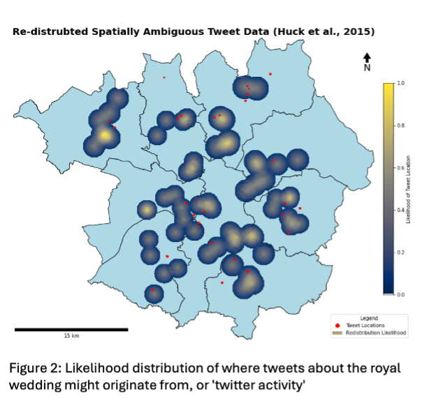
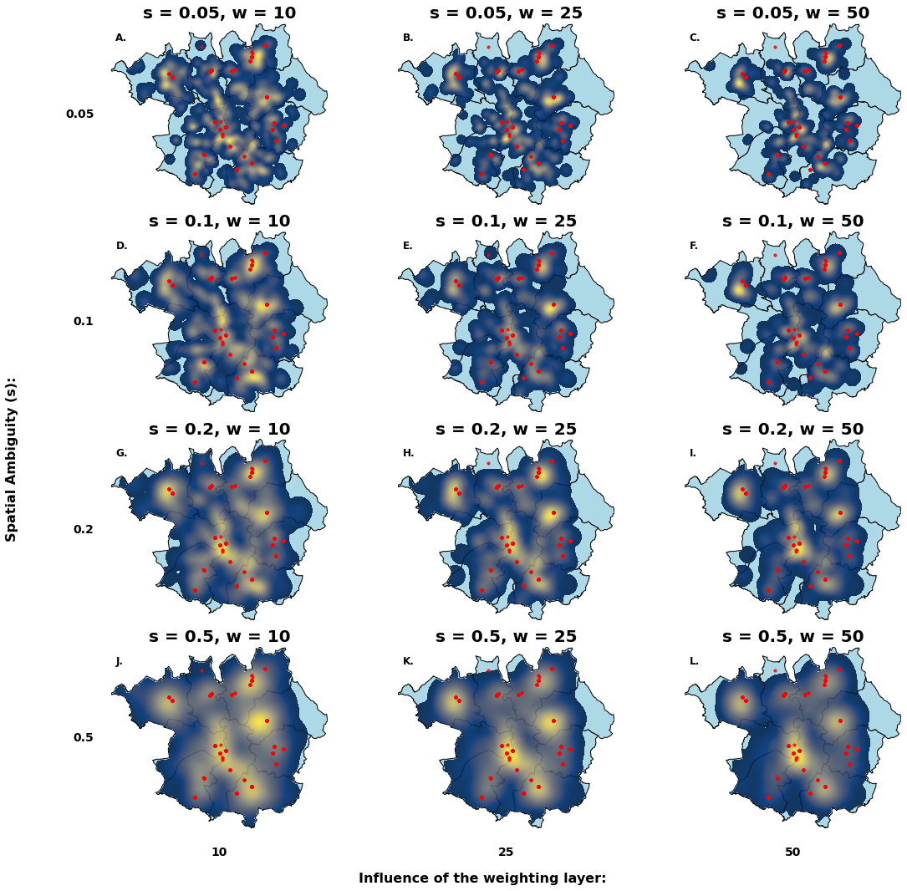

Weighted Redistribution: Resolving Spatial Ambiguity with GIS
Project Overview
This project implements and extends Jonny Huck’s (2015) spatial weighted redistribution algorithm to resolve the false hotspot problem in spatially ambiguous data. Specifically, it reallocates geocoded Twitter data about the Royal Wedding across Greater Manchester to visualise likely tweet origin based on population density. I then evaluated the extent to which this output informs marketing insights for different advertising approaches.
Passively geocoded tweets are collapsed into a single centroid of the local administrative boundary, creating misleading hotspots. This project reimplements a weighted redistribution algorithm to diffuse those points across each admin area, informed by a weighting layer of population density to show the likelyhood of their origin.
This project achieved an 82 in a third year GIS module.
Motivation and Relevance
The challenge was to implement an algorithm that addressed spatial ambiguity and generalisation — both common issues in real-world data, particularly in advertising, urban planning, or emergency services. These distortions are often overlooked in spatial analysis workflows.
In tackling this, I explored:
- How to translate methodological ambiguity into a computational workflow
- Efficient geospatial processing using raster manipulation, vector masking, and spatial indexing
- How the Modifiable Areal Unit Problem (MAUP) introduces limitations when polygons used for redistribution differ in resolution and shape from the original geocoded data
Key Skills and Design Decisions
- Spatial Indexing: I leveraged GeoPandas’
sindexwith R-trees to filter points in logarithmic time, usingwithin()checks to confirm geometry containment. - Efficient Geometry Filtering: Random seeds were batch-generated within bounding boxes and validated in vectorised NumPy operations to avoid redundant loops.
- Raster Updates via Disk Buffers: Used
skimage.draw.disk()to localise Euclidean decay calculations, avoiding computationally expensive full-raster iteration. - Error Robustness: Try-except blocks catch out-of-bounds errors without crashing execution — essential for robust raster processing.
- Visualisation Optimisation: The core plotting function was modularised to support both standalone and multi-panel outputs, with intelligent title, scale bar, and legend rendering.
Figure 1: False Hotspots from Spatially Ambiguous Point Data

Figure 2: Spatial Redistribution Output

The standalone output map visualises how point data is diffused in proportion to the population weighting surface. It includes all key cartographic elements such as scalebar, legend, north arrow, and transparency masking.
Figure 3: 12-Panel Dynamic Sensitivity Analysis

The 12-panel figure was created dynamically to visualise how the algorithm responds to changes in the s parameter (spatial ambiguity) and W (number of seed samples). As expected:
- Lower
svalues lead to tight clusters suitable for fine-resolution targeting (e.g., billboards)
- Higher
svalues broaden distributions — ideal for coarse targeting like regional radio
- Larger
Wvalues favour areas with high weighting (dense populations), while lowWintroduces greater stochastic spread
Challenges Overcome
- MAUP and Scale Discrepancy: The tweet data’s Level 3 admin areas didn’t perfectly align with the shapefile used, leading to mismatches between labelled and redistributed zones. This revealed critical spatial assumptions often buried in generalisation pipelines.
- Visualising Uncertainty: Rather than claim precision, the algorithm visualises likelihood, making the outputs more suitable for qualitative inference.
- Efficiency: Runtime was kept fast enough to allow multiple model runs with varied parameters. This was key for producing the 12-panel visual without rewriting the mapping function or bloating memory.
Runtime & Reproducibility
- Code executes in under 10 seconds, depending on configuration
- All visual outputs are reproducible using a single-line call to the main algorithm and
visualise_results()function - Optional seeding enables reproducibility for formal reporting and submission
Resources:
To generate maps:
- All core functionality is embedded in a single Python script. See the accompanying README for setup instructions and parameter configuration examples.
- Standalone Map: Run the code with your preferred
sandWparameters. Results are visualised directly. - 12-Panel Comparison: Use the provided function
visualise_multiple_distributions()to produce a matrix of results across a specified range ofsandWvalues.
Final Reflection
This project demonstrates a solid understanding of spatial data uncertainty, Python-based geospatial workflows, and efficient algorithm design. I invested time in optimising for usability, flexibility, and clarity — skills that directly transfer into real-world GIS roles.